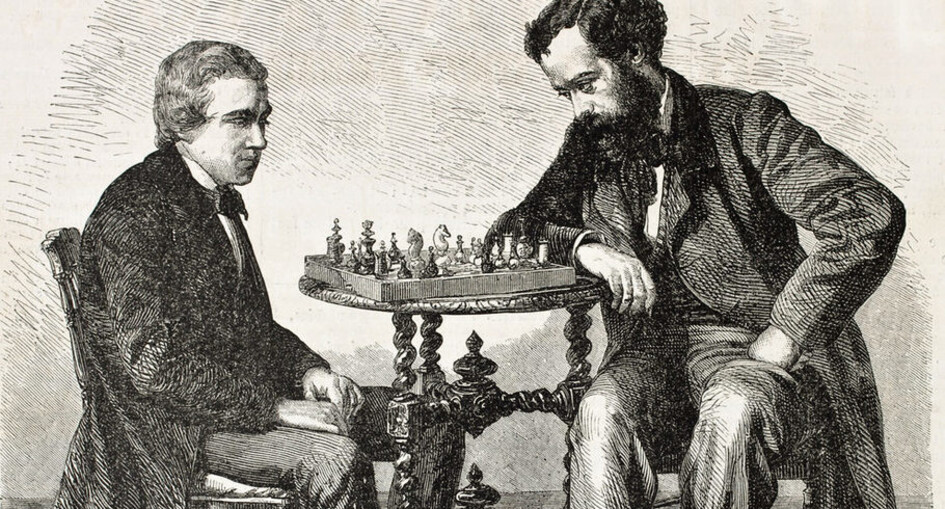

Historia del ajedrez
El origen del juego ajedrez sigue siendo un misterio, pero la versión más aceptada sugiere que el ajedrez fue inventado en Asia, probablemente en India, con el nombre de chaturanga, y desde ahí se extendió a China, Rusia, Persia y Europa, donde se estableció la normativa vigente. Sin embargo, investigaciones recientes indican un posible origen chino, en la región entre Uzbekistán y la antigua Persia, que se podría remontar hasta el siglo iii a. C.

Uno de los registros literarios más antiguos sobre el ajedrez es el poema persa Kar-Namag i Ardashir i Pabagan, escrito en el siglo vi. A partir de esta era, su evolución está mejor documentada y ampliamente aceptada en el mundo académico. Tras la conquista de Persia por los árabes, éstos asimilaron el juego y lo difundieron en Occidente, llevándolo al norte de África y Europa, e incluso la actual España e Italia alrededor del siglo x, desde donde se extendió al resto del continente llegando a la región de Escandinavia e Islandia. En Oriente, el ajedrez se ha expandido desde su versión china, el Xiangqi, a Corea y Japón en el siglo x.
En el siglo xv, el juego fue ampliamente difundido en Europa y entre las variantes existentes del juego, la europea fue la que se destacó por la velocidad indicada y además por la inclusión de la dama y el alfil. A pesar de que en esa época ya existía literatura de ajedrez, fue en este período cuando comenzaron a surgir los primeros análisis de aperturas debido a las nuevas posibilidades de juego.
Las partidas comenzaron a ser registradas con mayor frecuencia y se han publicado más estudios teóricos. En el siglo xviii se fundaron los primeros clubes para la práctica de ajedrez y federaciones deportivas en Europa, y debido a la gran cantidad de pequeños torneos que ocurren por todo el continente, en 1851 se celebró el primer torneo internacional en Londres. La popularidad de las competiciones internacionales ha llevado a la creación del título de campeón del mundo, ganado por Wilhelm Steinitz en 1886, y, en 1924, se fundó la Federación Internacional de Ajedrez (FIDE), en París, que organiza la primera Olimpiada de Ajedrez y el mundial femenino, ganado por Vera Menchik.
A finales de la década de 1950, con la popularización de las computadoras, comenzaron a surgir los primeros programas que juegan al ajedrez, que acompañaban la evolución del tratamiento de la información e introducirían el juego en la era moderna con competiciones en línea y facilitando el análisis de las partidas.
Las piezas de ajedrez, también conocidas como trebejos, son los elementos móviles del juego de ajedrez que usan dos jugadores cada uno. Cada jugador dispone de dieciséis piezas:
-
Un rey.
El rey (♔♚) es la pieza más importante del ajedrez, darle jaque mate es el objetivo principal del juego.
-
Una dama (o reina).
La dama (♕♛), también conocida como reina, es una pieza mayor del juego de ajedrez, se puede mover vertical, horizontal o diagonalmente cualquier número de escaques.
-
Dos torres.
La torre (♖ ♜), antiguamente llamada «roque», es una pieza mayor de ajedrez, empleada generalmente en la fase final del juego debido a su valor estratégico y táctico, que ha sido ampliamente estudiada en la literatura ajedrecística.
-
Dos alfiles.
El alfil (♗ ♝) (antiguamente llamado arfil) es una pieza menor del ajedrez occidental de valor aproximado de tres peones.
-
Dos caballos.
El caballo es una pieza menor del ajedrez occidental de un valor aproximado de tres peones. Tiene un movimiento semejante a una "L" (también llamado "martillo") y, a diferencia de otras piezas, puede saltar piezas intermedias.
-
Ocho peones.
El peón es una pieza del ajedrez. Al comienzo de una partida, cada jugador tiene ocho peones que están dispuestos en las filas 2 y 7, por delante del resto de piezas.
Las piezas de un jugador son de color blanco o claro, y se denominan "blancas", mientras que las del otro jugador son de color negro u oscuro y se denominan "negras". Además de estas piezas estándar, existen muchas variantes de ajedrez o ciertos tipos de problemas llamados no estándar, en los que hay piezas mágicas.